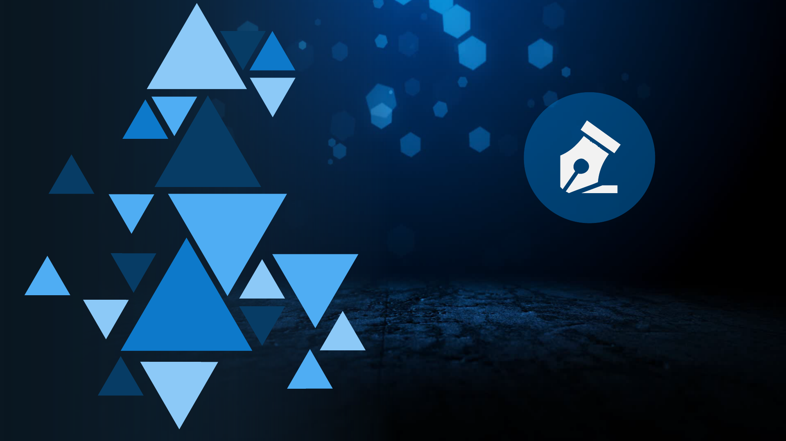

区块链5.0时代——恒智链

重点问题解答

重点问题解答-市价涨与跌？
问：HAI的市价是否会出现涨跌
答：（大前提：决定商品价格的最主要因素就是供求关系）
1.HAI与BTC、ETH都是一款基于区块链为底层技术，分布式、去中心化
的加密数字资产，其价格完全由市场决定。
2.开发前期，HAI最主要的来源（90%）来自超级算力每日产出。
3.HAI是全球企业购买或租用恒智链算力的唯一途径。
4.HAI未来对接全行业应用，包含已知的联合国粮食与国家储备黄金
5.恒基AI将与某国家共建驻华领事馆与金融中心办事处
重点问题解答-上主流交易所的时间
问：什么时候上火币网？
答：
1.公司随时都可以上！
但是！不能盲目的上、没有目的的上
2.上主流交易所所需的不仅仅是资金，而需要更多关键数据：
如：HAI涨跌数据和HAI地址数量
多方协力！共创辉煌
！

重点问题解答-上主流交易所的时间
问：什么时候上火币网？
答：
3. 不要被固有思维所限制，不仅仅是火币网
公司要上的交易所：
Coinbase Bit.ccBitMEX Bithumb Bit-Z Bibox
OKEX 币安
火币
币赢
当前全球十大交易所！

重点问题解答-HAI的需求
问：HAI应用场景中，AI算力是否有市场需求？
答：
1.20年前的计算机，10年前的云服务器，今天的AI算力
2.Google、微软、苹果等全球领先的IT相关企业所研发的AI
算力，连自身需求都无法满足，如何满足市场？
3.国家要不要算力？阿里巴巴要不要算力？腾讯要不要算力
？
华为要不要算力？中兴要不要算力？小米要不要算力？

重点问题解答-HAI的需求
问：HAI应用场景中，AI算力是否有市场需求？
答：
5.从企业的角度，是选择耗费高额的开发成本，高额的人力成本，高
额的维护成本？还是选择购买或者租用高性能，高安全性，低成本的
恒智链？
4.随着智能科技进步和普及，市场对5G网络、人脸识别、自动驾驶等
人工智能需求日益增加，必然导致企业对AI算力的需求日益激增。
合理创新！顺势而为
！

重点问题解答-升级时机
问：第二阶段上线，是否是公司资金上出现问题？
答：NO！第二阶段上线取决于以下几点要素：
2.恒基AI有近10年的财务运营、企业团队、资产配置经验-------人和
1.第一阶段所积累的数据及技术沉淀已相对成熟。
3.国际市场运营，融资5000万美金为区块链项目启动-----------地利
4.区块链市场寒冬将过，即将春暖花开，迎来真正区块链时代---天时
天时！地利！人和！

重点问题解答--真伪模式
问：HAI是否是伪区块链模式，实质是分币？
答：NO！
如果是，则不需要上以太坊，不需要是区块链货币
如果是，则不需要应用场景，不需要超级算力
如果是，则不需要建立国际关系，不需要对接联合国
事实胜于雄辩！

重点问题解答-usdt的涨跌
问：usdt跌了怎么办？
答：
美金跌了怎么办？欧元跌了怎么办？人民币跌了怎么办？
usdt是全网共识的区块链法币
在范围内跌涨证明法币代币保持非常高的活性

区块链5.0时代——恒智链